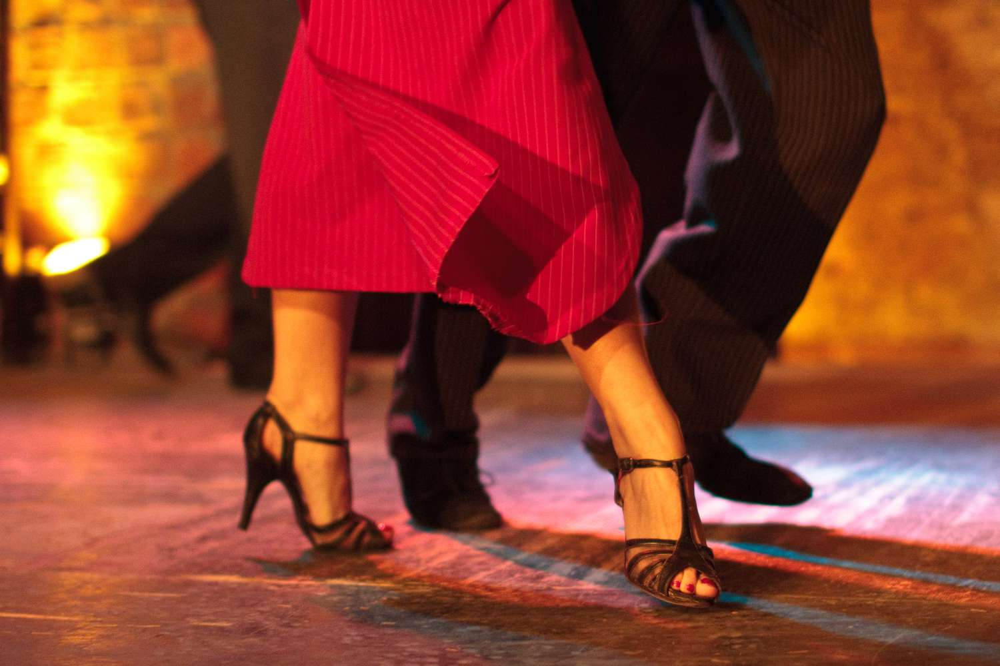

Tango born in the late 1800s in the immigrant port districts
Explore Tango in Buenos Aires

Visit a milonga (tango hall) or watch a professional show in the San Telmo or La Boca neighborhoods.
Tango** in Buenos Aires isn’t just a dance; it’s a 2/4 or 4/4 time signature 'mathematical embrace' born from the fusion of African, European, and Gaucho rhythms in the 19th-century slums.
It’s a "Migratory Synthesis." The 2x4 beat comes from the Cuban Habanera and the African Candombe.
The "Queer Tango" movement has exploded in the last decade, breaking the traditional "Man leads, Woman follows" rule to make the dance gender-neutral.
What to Expect
Dark, moody dance halls, melancholic accordion music (bandoneon), and locals dancing until 4 AM.
The "Foundation" (The Embrace)
Stand tall. Your weight should be slightly over the balls of your feet (the metatarsals).
Imagine a circle between you and your partner. Keep your upper body quiet and your 'frame' solid but not stiff.
The "8-Step Basic" (Paso Básico)
Step 1: The Backstep. Take a small step back with your right foot. (This is the 'entry' into the dance flow).
Step 2: The Side-Step. Step to the left with your left foot.
Step 3: The Outside Walk. Step forward with your right foot, but walk outside your partner’s right foot.
Step 4: The Forward Walk. Step forward with your left foot.
Step 5: The Join (The 'Cierre'). Step forward with your right foot and bring your feet together.
Step 6: The Forward Step. Step forward with your left foot.
Step 7: The Side-Step. Step to the right with your right foot.
Step 8: The Resolution. Bring your left foot to join your right foot. Feet closed. Axis reset.
Tips for Success
In Tango, your hips and your shoulders can move independently. This is called Dissociation. Think of your upper body as a calm lake and your legs as the ducks paddling underneath!
Unlike Salsa or Swing, Tango loves the silence. You don't have to step on every beat. A well-timed Pause is considered highly 'sophisticated' in the milongas (tango halls).
Don't look at your feet! (Gravity will keep them there, I promise). Keep your eyes at your partner's shoulder level to maintain your Center of Gravity.
The Tango Playlist
Carlos Gardel: The "King of Tango" (The classic, melodic style).
Juan D'Arienzo: Known as the "King of the Rhythm" (Perfect for beginners because the beat is very clear!).
Astor Piazzolla: The "Revolutionary" (Complex, 'New Tango'—wait until you've mastered the basics for this one!).S